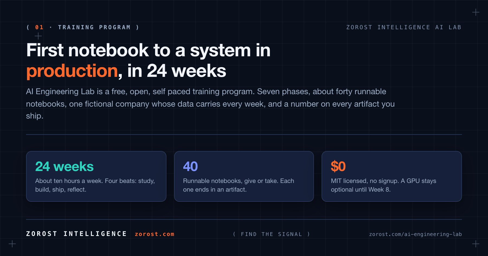

[](LICENSE) [](curriculum/README.ja.md) [](curriculum/README.ja.md) [](https://zorost.github.io/AI-Engineering-Lab/) **日本語版** · [英語版](README.md) · **[最初に読む](START-HERE.ja.md)** · [24週間の一覧](curriculum/README.ja.md) · [Reference](reference/) · [用語集](reference/GLOSSARY.ja.md) · [英語版](reference/GLOSSARY.md) · [Roadmap](ROADMAP.md) Zorost Intelligence AI Labが開発 · Washington, DC · [zorost.com/ai-engineering-lab](https://zorost.com/ai-engineering-lab)まず始める
git clone https://github.com/zorost/AI-Engineering-Lab.git
cd AI-Engineering-Lab
python -m pip install -r requirements.txt
- プログラミングやAIが初めてですか？ まず START-HERE.ja.md を読んでください。使うツール、進む順番、問題が起きたときの対処を説明しています。
curriculum/week-01を開きます。 環境を構築し、その後の全週で再利用するデータセットを生成します。最初の8週間にGPUは不要です。- トラッカーを開きます。
curriculum/trackingの月曜日の行から始めます。
必要な情報は各週からリンクされています。次に何を読むかを推測する必要はありません。
これは何か
AI Engineering Labは、Pythonの基礎から本番品質のAIシステムまで、24週間で学ぶ無料・オープン・自習型の training program です。機械学習と深層学習、LLMの内部構造、prompt/context engineering、ベクトル検索を使ったRAG、量子化、LoRAとDPOによるfine-tuning、評価ハーネス、coding-agent harness、AI agentとModel Context Protocol、Azure AI Foundry、Google Vertex AI、AWS Bedrock、そしてDatabricks lakehouseをゼロから本番運用まで扱います。
このプログラムは Zorost Intelligence AI Lab が開発しています。2時間で終わるprompt講座ではありません。生成AI、applied machine learning、Databricks modernizationのチームに新しく加わるエンジニアへ、Labが渡すカリキュラムを想定しています。実際に手を動かし、ユースケースを通し、本番で壊れる点にも正直であることを重視します。「読むだけでなく実行できるAI engineer roadmap」を探しているなら、これがそのためのプログラムです。毎週、実行可能な成果物で終わります。
毎週、1つの概念と1つの成果物を組み合わせます。
- ユースケース。 24週間を通して続く、架空の物流会社のケーススタディ。
- 実行可能なNotebook。 Python、SQL、PySparkを使い、ローカルまたは無料のcloud notebookで実行します。
- スコア。 Week 3以降は、metricとerror noteが付くまで完了とはみなしません。
対象者: AIを開発に取り入れたいsoftware developer、engineeringへ進みたいanalyst、学生・キャリアチェンジャー、技術系founder。ソフトウェアをインストールできるコンピューター、週約10時間、基本的なコンピューター操作が必要です。Python経験、GPU、有料API keyは必要ありません。
対象外: model architectureの研究職を目指す人、週末だけのprompt workshopを探している人。
オンラインでプログラムを見る
cloneする前に、カリキュラム全体をページとして読むこともできます。 zorost.github.io/AI-Engineering-Lab に24週間の一覧があり、各週の目的から直接そのフォルダーへ移動できます。導入を日本語で読む場合は、まず START-HERE.ja.md を開いてください。
24週間の旅

| Phase | Weeks | 到達点 |
|---|---|---|
| 1 · Foundations | 1〜4 | Python、data、machine learning、deep learningを学び、最初から評価の視点を持つ |
| 2 · LLM core | 5〜8 | token、transformer、prompt/context engineering、retrieval、graph、local modelを扱う |
| 3 · Model engineering | 9〜11 | 量子化、LoRA/DPOによるfine-tuning、serving、evalとerror analysisを行う |
| 4 · Harnesses and loops | 12〜13 | Claude Code、Cursor、OpenCode、DeepSeek Harnessとspec-driven loopを使う |
| 5 · Agents | 14〜17 | single agent、multi-agent、MCP、OpenClaw、Hermes、agent operationsを構築する |
| 6 · Cloud AI platforms | 18〜20 | Azure、Vertex、Bedrockの3つのcloudで同じagentを動かし比較する |
| 7 · Databricks zero to hero | 21〜24 | lakehouse、Unity Catalog、PySpark、Lakeflow、AI Search、Genie、本番capstoneを完成させる |
週ごとの詳細は curriculum/README.ja.md、図を使った全体像は curriculum/learning-path.md を見てください。
1週間の進め方

| Beat | いつ | やること |
|---|---|---|
| Study | 月〜火 | その週のREADMEと、そこからリンクされているknowledge-baseを読む |
| Build | 水〜木 | Notebookを実行し、変更を加え、意図的に1つ壊してみる |
| Ship | 金 | ユースケース演習を行い、成果物1つ・数字1つ・正直なメモ1つを提出する |
| Reflect | 金〜日 | 10問のquiz（8問正解で合格）を解き、trackerを更新する |
Week 3以降、すべてのAI成果物にはmetricと短いerror analysis noteを付けます。この習慣がプログラムの核心です。
1つの会社を24週間使う

あなたは架空の運送会社 ZoroLogistics のAI engineering teamです。Week 1で生成するdatasetは、Week 2のSQL演習、Week 3のtraining data、Week 7のretrieval corpus、Week 10のfine-tuning set、Week 16のagent tools、Week 23のfeature tablesへ引き継がれます。24個の独立したdemoではなく、互いにつながった成果物のportfolioを完成させます。
freightを教材にするのは、規制・追跡可能性が重要で、運用上の複雑なテキストが多いからです。学んだskillは、航空、製造、製薬、政府、金融にも応用できます。これはZorostが実際に支援する業界です。
リポジトリの中身

AI-Engineering-Lab/
├── START-HERE.ja.md # 日本語の初日ガイド
├── curriculum/ # 24週間のprogram、manifest、Excel tracker
│ └── week-01/*.ja.* # Week 1の日本語ガイドとNotebook
├── reference/ # 各週から参照する資料
│ ├── knowledge-base/ # 14個のconcept file
│ ├── skills/ # Claude Code、Cursor、OpenCode、Ollamaなどのtool guide
│ ├── agents/ # OpenClaw、Hermes、MCPなどのagent pattern
│ ├── platforms/ # Azure、Vertex、Bedrock、Databricks
│ ├── resources/ # 週ごとに対応付けた無料の外部course
│ └── GLOSSARY.ja.md # 用語集（日本語版）
├── zoro/ # ケーススタディ用のseed済みdata toolkit
├── data/ # 生成したtableの保存先（gitignore対象）
├── scripts/ # リポジトリのmaintenanceとcheck
├── docs/ # GitHub Pagesのprogram site
└── assets/ # 図
日本語版は、英語の原文と並行して少しずつ追加します。コマンド、コード、API名はそのまま使えるように表記しています。
プログラムのframework
このcurriculumは Andrew NgのAI Engineering Skills Map と、AI時代のsoftwareを作るための 3つのloop を実装します。Zorostは、skillだけではshipできず、systemとして届ける必要があるという視点を加えています。

Skills MapはAndrew Ngが2026年にThe Batchで公開した統合です。AI Engineering Labは独立した実装であり、Andrew NgまたはDeepLearning.AIと提携・推奨関係にはありません。詳しくは Zorostの解説 を参照してください。

費用
無料です。プログラムはMIT licenseで、signupもありません。Week 1〜13はlocal model、無料tierのAPI、またはAPI不要の経路があります。Week 18〜24はcloudのfree tierを使い、範囲内に収める方法も各週で説明します。GPUはWeek 8まで任意です。
困ったとき
- エラー全文を読み直します。最後の行が問題を示します。
- その週の
exercises.mdのヒントと 用語集 を確認します。 - GitHub issueには、週番号、実行した内容、tracebackを書きます。
- report、security、conductに関する連絡は info@zorost.com へ送ります。
contributing、code of conduct、securityも参照してください。
Zorost Intelligence AI Labについて
Zorost Intelligenceは、accuracy、traceability、complianceが不可欠な組織向けに、AIとdata platformを設計・開発・運用しています。このプログラムは AI Lab が開発し、zorost.com/ai-lab のTraining 01として公開しています。Labのopen test benchは AI Fieldwork です。
このリポジトリの原文はZorost Intelligenceの著作物です。vendor platformについては各ファイルのSourcesに記載し、第三者のcourse materialは転載していません。
License
MIT。詳しくは LICENSE を見てください。自由に学び、自由に作り、Zorost Intelligenceを表示してください。
© 2026 Zorost Intelligence LLC · zorost.com · @ZorostAI · info@zorost.com